UNIDOS POR HOGWARTS
Conheça os maiores bruxos de Hogwarts!
Conheça alguns dos bruxos e bruxas mais importantes do mundo mágico de Harry Potter, suas histórias, habilidades e a importância que tiveram na luta contra as forças das trevas.
APRENDA CRIANDO
UNIDOS POR HOGWARTS
Conheça alguns dos bruxos e bruxas mais importantes do mundo mágico de Harry Potter, suas histórias, habilidades e a importância que tiveram na luta contra as forças das trevas.

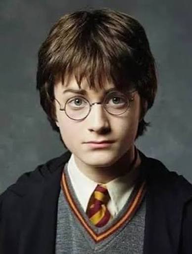
O menino que sobreviveu a Lord Voldemort e se tornou um dos bruxos mais importantes de sua geração.
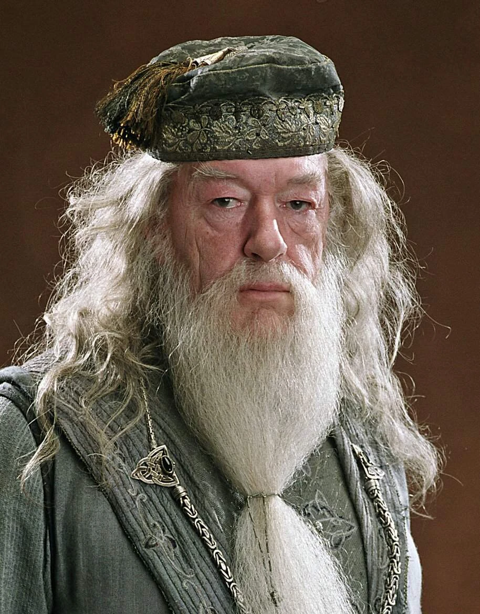
Um dos maiores bruxos de todos os tempos e diretor de Hogwarts, conhecido por sua sabedoria e poder.
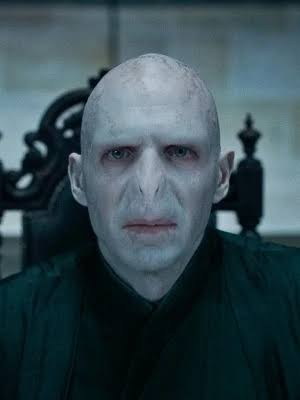
Um poderoso bruxo das trevas que buscou conquistar o mundo mágico e derrotar todos que se opusessem a ele.
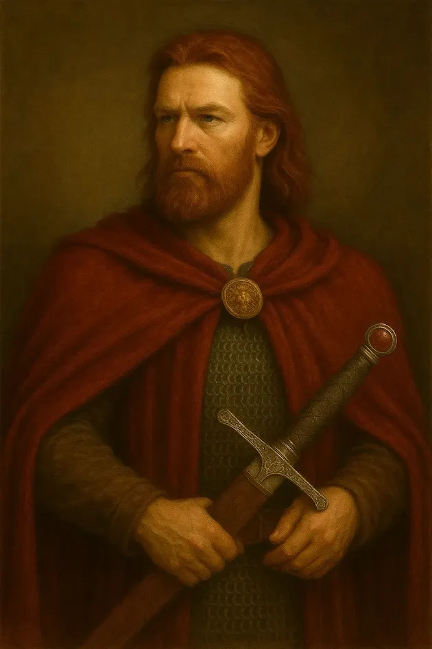
Um dos quatro fundadores de Hogwarts, conhecido por sua coragem e por valorizar os bruxos corajosos.
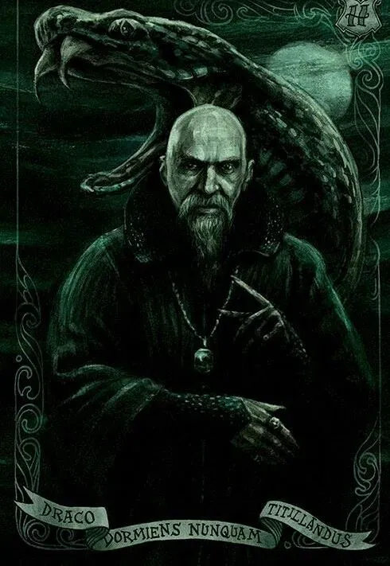
Um dos fundadores de Hogwarts e criador da Sonserina, famoso por sua habilidade com a língua das cobras.
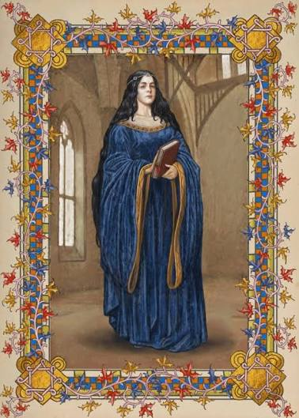
Uma das fundadoras de Hogwarts, conhecida por sua inteligência, criatividade e amor pelo conhecimento.
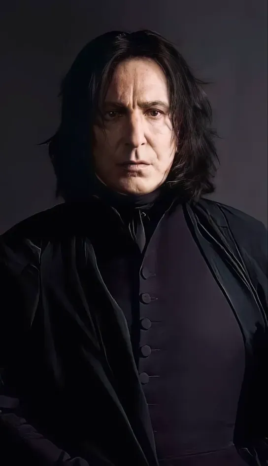
Professor de Hogwarts e mestre em Poções, que desempenhou um papel importante na luta contra Voldemort.
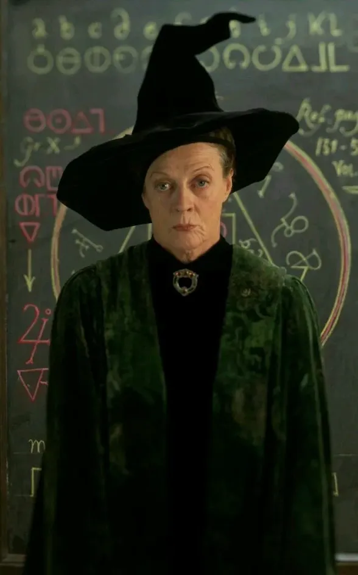
Professora de Transfiguração e diretora de Hogwarts, conhecida por sua inteligência, coragem e disciplina.
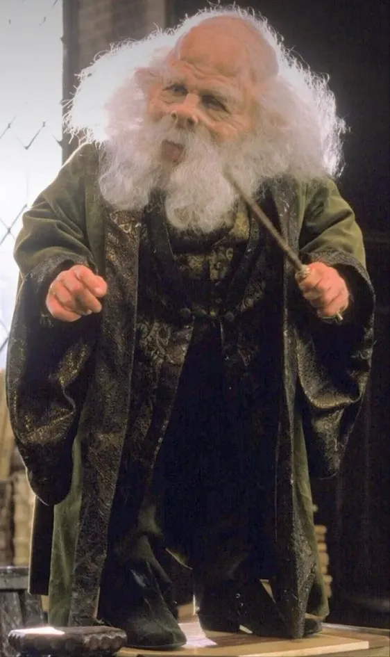
Professor de Feitiços de Hogwarts e um bruxo habilidoso, conhecido por seu grande conhecimento mágico.
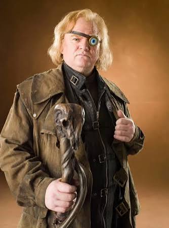
Um famoso auror conhecido por sua experiência contra as Artes das Trevas e por sua constante vigilância.
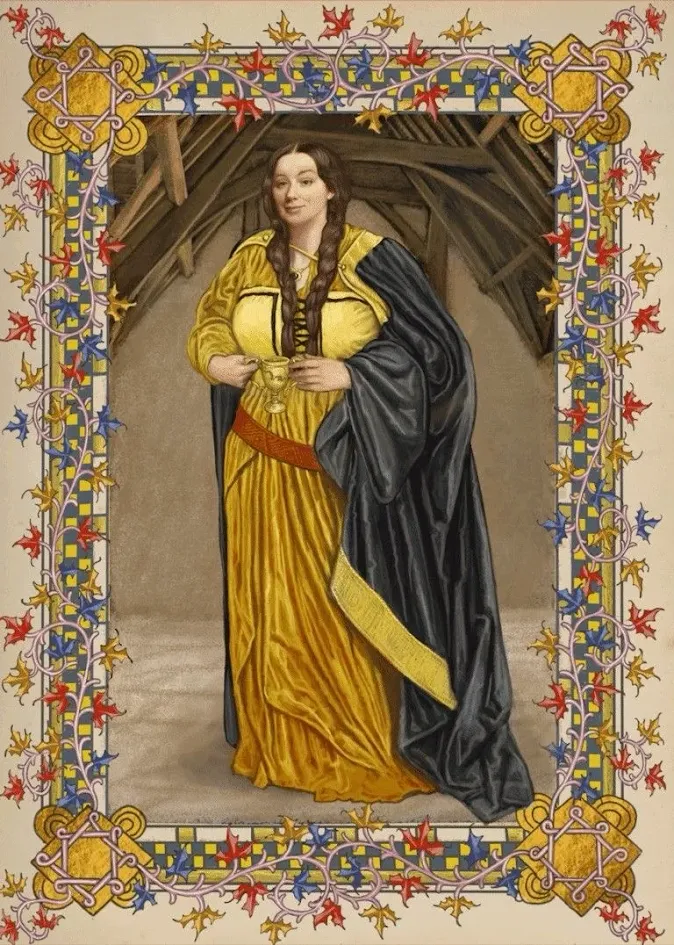
Uma das fundadoras de Hogwarts, conhecida por sua lealdade, dedicação, justiça e valorização do trabalho.
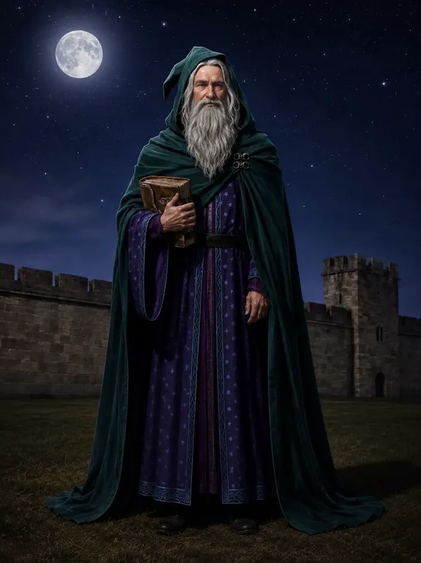
Um dos bruxos mais famosos da história da magia, lembrado por seu enorme conhecimento e suas habilidades mágicas.